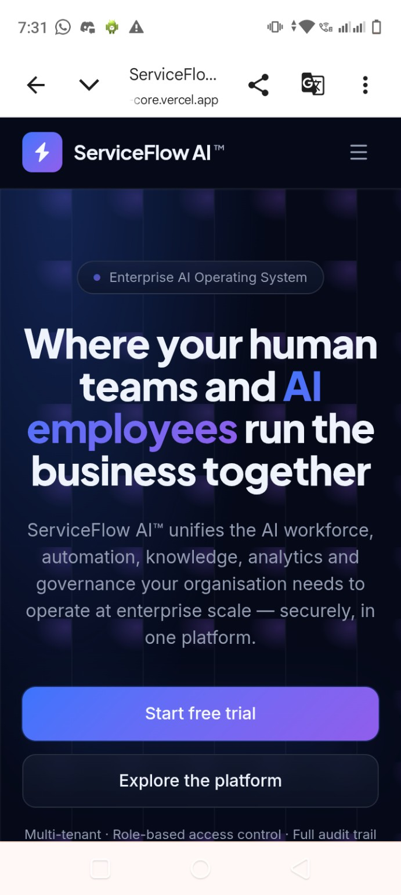

ServiceFlow AI™
An enterprise AI operating system concept bringing human teams and AI employees together through AI assistance, automation, knowledge, analytics and governance.
Explore Live Website ↗Discuss AI Solutions ↗Platform capabilities & product direction
AI Copilot
Assistant interface shown in the product preview for AI-supported work.
AI Workforce
Human and AI employee collaboration is the platform's stated product vision.
Automation & Knowledge
Workflow automation and knowledge/RAG are part of the previously discussed product scope.
Operations Analytics
Preview shows service performance, SLA, CSAT and resolution dashboard widgets.
Multi-tenant Architecture
Multi-tenant, role-based access and audit trail are advertised on the landing page; backend implementation has not been audited.
Business Operations
Customer operations and business dashboards are part of the proposed MVP direction.
Actual product screenshots


Engineering & verification notes
The portfolio owner identifies ServiceFlow AI as a project she developed. The available evidence is a public project URL, prior project discussion and supplied UI screenshots. Source repository, exact implementation stack, authenticated workflows, real customer usage and production readiness are not independently verified. Displayed dashboard figures are UI examples, not validated business outcomes.